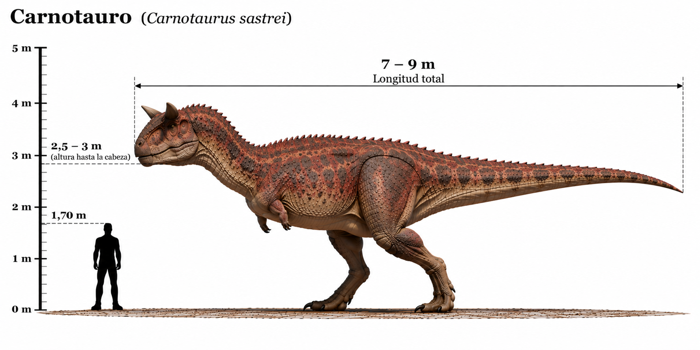

Carnotaurus sastrei

El Carnotaurus sastrei fue un dinosaurio terópodo carnívoro que habitó América del Sur durante el Cretácico tardío, hace aproximadamente entre 72 y 69 millones de años. Su nombre significa "toro carnívoro", en referencia a los dos característicos cuernos que sobresalían por encima de sus ojos. Poseía un cráneo corto y profundo, un cuello musculoso y unas patas traseras largas y poderosas. Sus extremidades delanteras eran extraordinariamente pequeñas, incluso en comparación con las del Tyrannosaurus rex. Se cree que estaba adaptado para desplazarse rápidamente, gracias a la estructura de sus extremidades posteriores y su musculosa cola. Otra característica destacada es que se han encontrado impresiones fósiles de su piel, que muestran pequeñas escamas y protuberancias distribuidas por diferentes partes del cuerpo.
- Grupo: Terópodo.
- Familia: Abelisauridae (abelisáuridos).
- Período: Cretácico tardío (hace aproximadamente 72–69 millones de años).
- Alimentación: Carnívoro.
- Longitud: Aproximadamente 7,5–9 metros.
- Altura: Aproximadamente 2,5–3 metros hasta la cadera.
- Localización: América del Sur (actual Argentina).
